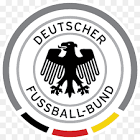

|  | DFB |
| Ethnic | German |
| Job | German Football Agency |
| Desc | xxxx |
Affiliation
| Location | Germany |
2008 11 16 Retrieve
[There was good news for Borussia Dortmund defender Robert Kovac on Saturday as he had a game knocked off his suspension following a successful appeal] Robert Kovac has hardly ever come into contact with the disciplinary committee in his long career. Furthermore, his coach Jurgen Klopp practically opened the door for his players with his behaviour. And finally, Mr Kovac has publicly apologised to Dr Jochen Drees
2014 10 08 Retrieve
[Mesut Ozil: Arsenal midfielder out with knee injury for up to 12 weeks] The MRI examination revealed a partial rupture of the outer band of the left knee joint. The treatment is six weeks of immobilisation of the knee joint. Mesut Ozil is likely to be [out for] 10 to 12 weeks
2014 10 14 Retrieve
[Chelsea star Schurrle out of Germany game] Andre Schurrle has caught a cold and will not be available for the game against Republic of Ireland. The Chelsea attacker has already departed from the team hotel in Essen.
2017 10 16 Retrieve
[Hertha Berlin have hit out at critics who suggest that their side ‘taking a knee’ before their weekend Bundesliga fixture against Schalke was little more than a marketing stunt] We see this gesture as a general commitment to the protection of human rights.
2018 03 26 Retrieve
[Hebert Weber said] What happened in the 2014 World Cup was totally out of the ordinary. While Germany was the favourite for the World Cup, just as they still are today, Brazil have never had a national team that conceded seven goals. The first three really shook the Brazilian team that day, who, in my view, knew the game was up after that. I’m really looking forward to Tuesday’s match because, no matter how much they deny it, Brazil will be desperate to make up for it
2018 03 26b Retrieve
[Adler Schwarz said] Becoming world champions while beating Brazil 7-1 was a very special feeling that I will carry with me forever. Nothing will ever do anything like that again, not even Germany itself, which still has a strong national team but new coach [Tite] has brought back the real Brazil, who win matches playing exciting and attacking football.
2018 03 26c Retrieve
[Eva Schulze said] The 7-1 win over Brazil still feels like a dream, from which it seems like I have still not woken. I remember in detail my reaction to every single goal - it was certainly the happiest day of my life watching football. We are still a very qualified team, especially with the emergence of new, young players. Fortunately, Germany have maintained the high level they reached in 2014.
2018 03 26d Retrieve
[Fritz Klein said] I always had a lot of respect for Brazil, and I will continue to do so. But I remember seeing a very determined Germany and, on the other side, a lost Brazil. I admit that I would like to have seen a better prepared and reactive Brazil.
2018 06 07 Retrieve
[Arsenal star Mesut Ozil will not be risked for Germany’s World Cup warm-up clash against Saudi Arabia] Precautionary measure: Mesut Ozil could not complete the final team training in Eppan and instead completed an intensive running session. He is out with a slight bruise [left knee] for Germany vs Saudia Arabia
2018 09 07 Retrieve
[Leroy Sane has withdrawn from the Germany squad for private reasons] Sane has left the team hotel in Munich after consultation with national coach Joachim Low on Friday for private reasons.
2018 11 15 Retrieve
[Germany vs Russia] Our view goes beyond the borders of the Nations League. The 2020 European Championship is the next big goal. Until then, we want to have a powerful team on the field again.
- 2019 05 31
- Germany coach Joachim Low will miss the upcoming Euro 2020 qualifiers against Belarus and Estonia after he was injured in a sporting accident
2019 06 30 Retrieve
[Jurgen Klopp sent Germany’s Under-21s a special video message ahead of Sunday’s European Championship final against an extravagantly talented Spain squad] Fortunately, about five, six, seven weeks ago, we showed that the Spanish can be beaten - even when they have [Lionel] Messi.
- 2019 07 07
- Marc Kosicke pointed out that Germany coach Joachim Low is also on a contract that runs out in 2022 and indicated that taking charge of Die Mannschaft is not out of the question for his client Jurgen Klopp.
2019 08 18 Retrieve
[Former DFB President Reinhard Grindel was particularly opposed to Ozil’s decision [and that of Gundogan] to pose with Erdogan in 2018] The DFB of course respects the special situation for our players with migrant backgrounds, but football and the DFB stands for values that Mr Erdogan does not sufficiently respect. Therefore, it is not a good thing that our internationals have let themselves be misused for his election campaign stunt. It certainly hasn’t helped the DFB’s integration efforts
2020 03 24 Retrieve
[Bundesliga suspension extended to April 30 due to coronavirus outbreak] The presidium [of the DFL] is aware that all scenarios and options for action also depend on external factors, on the development of which the DFL and clubs have only limited or no influence at all: among other things, the further spread of the virus and the assessment of the situation by politics. Against this background, the presidium of the General Assembly will recommend a further suspension of game operations in the Bundesliga and 2.Bundesliga until at least April 30
In view of the potentially existential situation of some clubs and because of responsibility for an industry with 56,000 direct and indirect employees, we unanimously target the goal of wanting to finish the season by June 30, as far as this is legally permissible and of course health-justifiable. In this regard, the DFL is currently working intensively on concepts to play games at a given time - due to the situation - even without stadium spectators and with a minimal use of workers in the areas of sport, general organisation and the media. In contrast to amateur and grassroots sports or other leisure events, only the stadium staff would be employed at this place of work
2020 04 30 Retrieve
[Bundesliga return decision delayed with proposed May 9 restart looking impossible] DFL of course accepts that no decision over re-starting Bundesliga and 2. Bundesliga was taken today. Alongside our medical and organisational teams, DFL and the clubs will carry on preparing to continue the season in May
2020 05 04 Retrieve
[DFL confirms 10 positive coronavirus test results in Bundesliga and 2.Bundesliga] As part of a first wave, a total of 1,724 coronavirus tests have been carried out at the 36 Bundesliga and 2nd Bundesliga clubs since Thursday. Samples from players and other team personnel such as coaching staff and physiotherapists were taken and examined by five specialist laboratory groups across Germany. Ten cases of infection were identified and reported to the health authorities. The respective measures, for example, the isolation of the people affected, including environmental diagnostics, were carried out directly by the respective clubs in accordance with the requirements of the local health authorities. A second wave of tests will be carried out this week - here too there may be isolated positive test results, especially since one of the tasks of this second round is to reduce the likelihood of ‘false negative’ findings that can never be completely ruled out. The DFL will continue to report on the results after this second test wave. The tests carried out in the past few days have served their purpose of providing additional security and thus protecting the players as best as possible from infection in team training or game operations. In the coming weeks and months, it will continue to be a matter of consistently implementing the agreed measures in everyday club life as well as in the private sphere. In the event of positive test results, the decision about the measures to be taken lies with the local health authorities
2020 05 14 Retrieve
[Bundesliga to allow five substitutions and relegation if season is completed amid coronavirus] From now on, each club will have a total of three opportunities to substitute players during a game, including the half-time break. If there is extra time in the second leg of the relegation play-offs, both teams are given a fourth opportunity to change players, which they can use in the interruption between regular time and extra time or in the half-time period of extra time. The DFL ‘Football Commission’ recommends that a maximum of two players be substituted at the same time. In the event that the season has to be abandoned prematurely, a regulation regarding the sporting classification is to be developed within the next two weeks. There will also be the possibility of a match being played in another stadium at short notice for overriding compelling legal, organisational and/or security reasons
2020 05 15 Retrieve
[German Football League (DFL) announced on Thursday that Bundesliga clubs will be able to use five substitutes as a result of the coronavirus pandemic] From now on, each club will have a total of three opportunities to substitute players during a game, including the half-time break. If there is extra time in the second leg of the relegation play-offs, both teams are given a fourth opportunity to change players, which they can use in the interruption between regular time and extra time or in the half-time period of extra time. The DFL ‘Football Commission’ recommends that a maximum of two players be substituted at the same time
2020 05 17 Retrieve
[There has also been controversy over players celebrating close together or even kissing, as was the case after Hertha Berlin scored against Hoffenheim] On the subject of goal celebrations, it was something that was merely advised in the guidelines - sanctions are therefore not necessary
2020 06 03 Retrieve
[Sancho, Hakimi, McKennie & Marcus Thuram avoid punishment from DFB for George Floyd tributes amid US protests] The DFB Control Committee will not initiate proceedings against Hakimi, Sancho, McKennie & Thuram. The committee also intends to maintain this line in new anti-racism campaigns to mark the death of George Floyd on the coming match days
2020 06 05 Retrieve
[DFL fine Borussia Dortmund star for breaking coronavirus lockdown to get a haircut] The DFL fines Manuel Akanji and Jadon Sancho. The Borussia Dortmund players had apparently violated general hygiene and infection protection standards at home hairdressing appointments, and in particular the medical and organisational concept of the DFL task force ‘Sports Medicine / Special Game Operations.
There is no question that professional footballers have to have their hair cut. However, this currently has to be done in accordance with the medical-organisational concept. In specific cases, the club had also provided its players with a corresponding opportunity.
In principle, the DFL does not provide any information about the amount of a penalty in contractual penalty proceedings. Players have the right to lodge a complaint within five days. The penalties are expressly not directed against the club, for which no ‘organisational fault’ is recognisable.